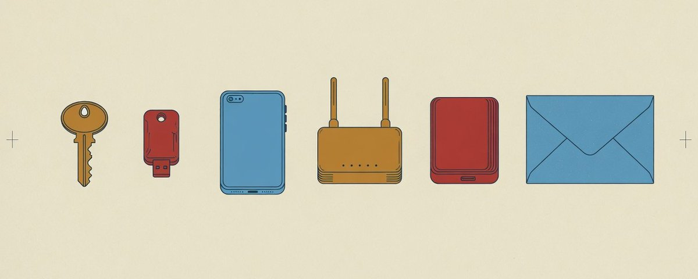

ELI5・像講給阿嬤聽
壞人最愛「偷懶的門」🚪：2026 資安實用指南
美國財經帳號 Markets & Mayhem（@Mayhem4Markets） 在 2026 年 10 月 25 日凌晨 00:39（台北時間）發文說：最近駭客新聞好多，他寫了一份長文教大家怎麼保護自己，「接下來一年多會很刺激，先把門窗釘牢」。
👉 看原始貼文（英文）
圖：原文〈A Practical Guide to Improving Your Security in 2026〉封面，來源 @Mayhem4Markets
一句話重點
大多數被駭，不是靠什麼厲害的新招，而是：同一個密碼到處用、電腦手機沒更新、人一急就被騙。擋住它們的方法很無聊、很便宜，但大家常常懶得做。
他教的 6 件事（白話版）
1. 每個地方用不同密碼
壞人從 A 網站偷到你的帳密，會拿去 B、C、D 網站一個個試。用「密碼管家」App 幫你記一堆不同的長密碼。最先顧好：Email、銀行、密碼管家本身。
像全家門、車、保險箱都用同一把鑰匙，掉一把全完了。
他也說：不用定期換密碼，被外洩時再換就好。
2. 開「第二道鎖」
登入時除了密碼，再要你手機上的確認或一支實體小鑰匙。最好是「通行金鑰（passkey）」或實體安全鑰匙；簡訊驗證碼比沒有好，但最弱之一。
手機突然跳出「是你在登入嗎？」而你沒在登入——千萬別按同意，代表有人已經知道你的密碼了。
3. 有更新就裝
手機、電腦、瀏覽器打開自動更新。舊手機原廠不再出安全更新，就別再用它開銀行、Email。
更新就像修好破掉的窗戶。壞人專挑還沒修的窗。
4. 備份，而且有一份「拔掉線」
勒索病毒會把檔案鎖起來要錢。照片文件多存一份在外接硬碟，存完拔掉收好，還要偶爾試著拿回來看看。
像重要證件影印一份放娘家：家裡淹水也不怕。
5. 家裡網路分開
客人用「訪客 Wi-Fi」，智慧插座、攝影機這類小家電也別跟你的電腦放同一個網路。
客人坐客廳就好，不用給他臥室鑰匙。
6. 跟家人約「通關密語」
接到「我是兒子，急著要錢」的電話，先問只有家人知道的暗號，或掛掉後自己回撥熟悉的號碼確認。
聲音、影片現在都能用 AI 假造，暗號比耳朵可靠。
他說的數字，查證結果
「鑽漏洞」已變成壞人入侵第一名（31%），偷密碼掉到 13%
Verizon 2026 年資料外洩調查報告確實這樣寫。補充：13% 下降有一部分是因為報告今年改了分類方式（新增「假冒情境詐騙」一類）。
Verizon 2026 DBIR（PDF）TechTarget 報導
「是報告 19 年來第一次偷密碼不是第一名」、「調查了 13,000 個組織」
報告確實是第 19 版，也說偷密碼「之前是第一名」；但「史上第一次」和「13,000 個組織」這兩個說法，我們沒在查到的摘要裡找到原句，而且分類方式改過，跟往年不完全能比。
美國官方「已知被利用漏洞清單」有 1,756 筆，2026 年新增 272 筆，361 筆跟勒索病毒有關
我們直接下載美國 CISA 官方清單算過（清單更新於 10 月 24 日台北時間），數字完全一樣。
CISA KEV 官方清單微軟研究「第二道鎖」降低 99.22% 風險、Google 研究簡訊擋下 76% 鎖定攻擊等
這些是較早的公司研究，常被引用，但這次沒有逐一打開原始研究核對，先當參考。
跟美股、00646 有關嗎？
這篇是資安教學，不是在講股市，也沒說哪家公司股價會怎樣。所以對買 00646（元大S&P500）的人，沒有直接關係。
真正有關的是「保護你的帳戶」：證券 App、銀行、Email 開第二道鎖、別點簡訊裡的連結，就是在顧好你自己的錢。
本頁不是投資建議，也不預測價格。
🙋 小工坊補充（不是原作者說的）
全部做完要一個月。最划算的第一步：Email 和銀行換成不同密碼＋開第二道鎖、手機開自動更新。原文後半有很多給公司 IT、工程師的內容（防火牆、程式套件），一般人可跳過。
資料來源
@Mayhem4Markets 原貼文與長文（2026-10-25 台北時間）
頁面為白話改寫；數字只引用可查的來源。